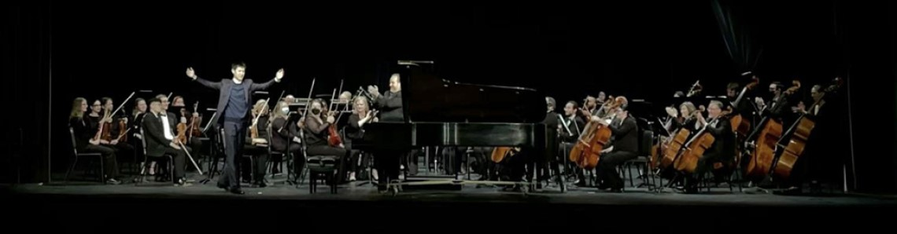

I am a classically trained pianist. I started at the age of 7 (maybe 6). I am actively performing as a musician within and outside of Duke. You may reach my YouTube link here (outdated though). The picture below is me performing a Beethoven concerto with the Fayetteville Symphony in February 2023.
I also paint when I was young. The picture on the right is a peacock I painted; it was auctioned and I donated the money to pitch in for the 2008 Sichuan earthquake. I hope that I still had the painting though.